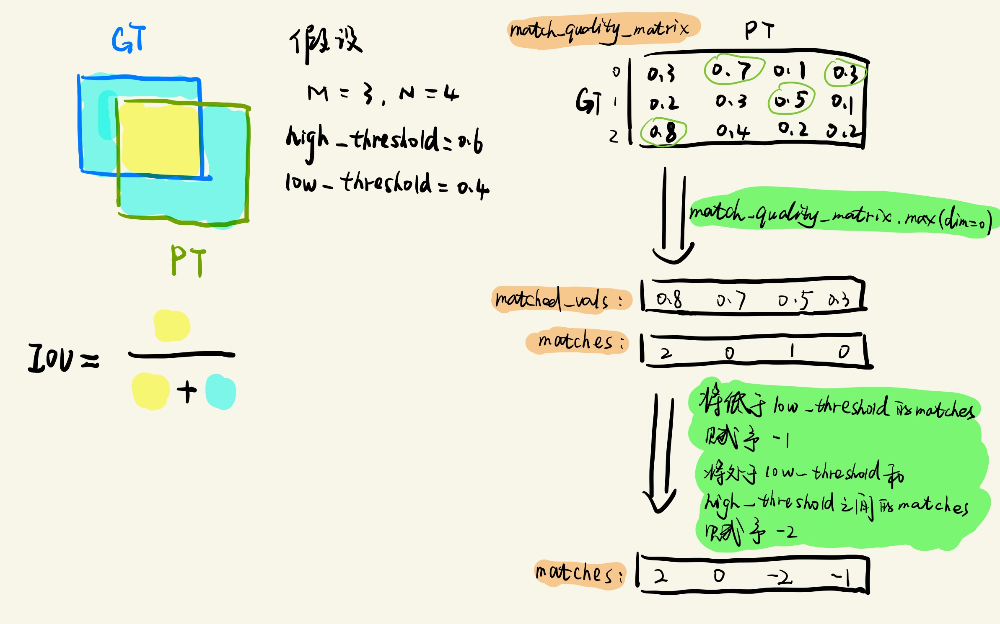
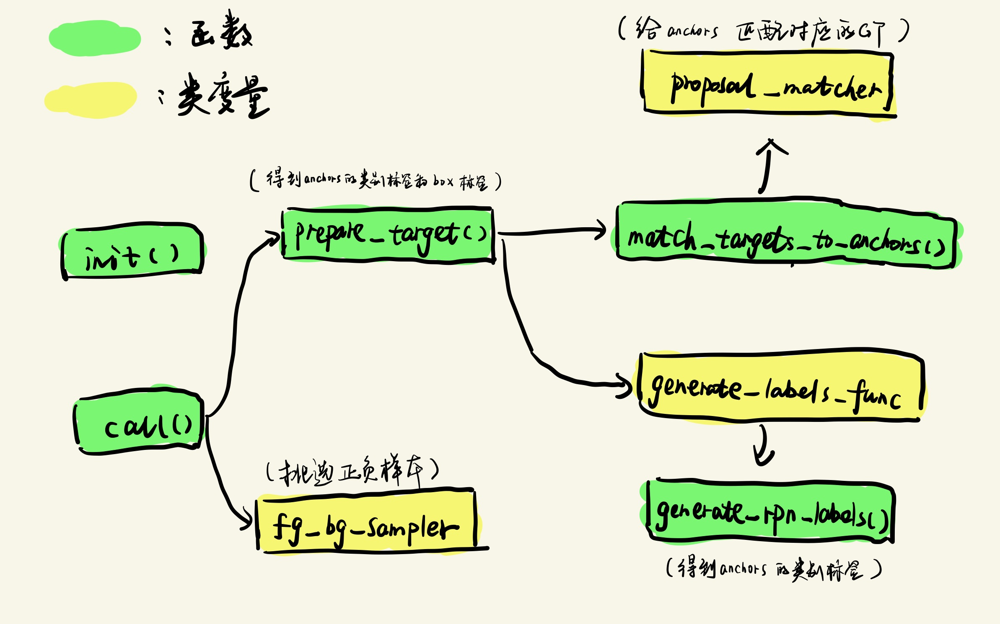

前言
上次介绍完了RPN的inference文件，这次接着介绍RPN的loss文件，RPN可以当作一个独立的模块来看待，它作用就是进行物体的检测（是否为需要检测的物体 以及 在什么位置），所以RPN阶段是有一个单独的loss需要计算的。
注：这里强调两个概念
- anchor 是网络预先固定好位置和大小的bounding box。
- proposal是通过网络通过学习给anchor加上一定偏移量得到的bounding box。
分配GT标签是在anchor的基础上进行判断分配的，而不是在Proposal的基础上进行判断分配的。
一、make_rpn_loss_evaluator()
RPN的loss文件在your_project/maskrcnn_benchmark/modeling/rpn/loss.py文件中，我们首先看到make_rpn_loss_evaluator()函数：
# RPN模块是通过调用这个函数 用于 计算loss的
def make_rpn_loss_evaluator(cfg, box_coder):
# 匹配器 用于给Proposals分配真实的标签
matcher = Matcher(
cfg.MODEL.RPN.FG_IOU_THRESHOLD,
cfg.MODEL.RPN.BG_IOU_THRESHOLD,
allow_low_quality_matches=True,
)
# 正负样本筛选器（只有前景和背景两个类别） 选择用于训练的样本
fg_bg_sampler = BalancedPositiveNegativeSampler(
cfg.MODEL.RPN.BATCH_SIZE_PER_IMAGE, cfg.MODEL.RPN.POSITIVE_FRACTION
)
# 损失的计算器 用于计算RPN阶段的loss值
loss_evaluator = RPNLossComputation(
matcher,
fg_bg_sampler,
box_coder,
generate_rpn_labels
)
return loss_evaluator从上面的代码可以看出，整个函数主要由三个类的对象来构成，这三个类分别是：
Matcher类：因为上一个博客介绍的RPNPostProcessor类它只生成了Proposals，但是这些Proposals预测得对不对我们并不知道，所以需要Matcher类来给anchors分配它对应的真实标签，从而知道这些anchors所对应的Proposals预测得对不对。
BalancedPositiveNegativeSampler类：由于anchors的数目比较多，可能会有许多被预测为负样本的情况（毕竟正样本在一张图中是少部分），为了使得正负样本在训练过程中保持平衡，因此需要该类来进行筛选。
RPNLossComputation：用于给筛选过后的anchors（加上box的偏移量就得到Proposals）计算其对应的loss。
下面针对这三个类来进行一一介绍：
二、Matcher类
这类在your_project/maskrcnn_benchmark/modeling/matcher.py文件中，我们首先看到初始化函数__init__():
1、init()函数
class Matcher(object):
"""
This class assigns to each predicted "element" (e.g., a box) a ground-truth
element. Each predicted element will have exactly zero or one matches; each
ground-truth element may be assigned to zero or more predicted elements.
Matching is based on the MxN match_quality_matrix, that characterizes how well
each (ground-truth, predicted)-pair match. For example, if the elements are
boxes, the matrix may contain box IoU overlap values.
The matcher returns a tensor of size N containing the index of the ground-truth
element m that matches to prediction n. If there is no match, a negative value
is returned.
这个类是用来给每一个预测的元素（例如box，mask 等等）分配一个GT
每个预测的元素将有0个或者1个所匹配（0个就是相当于是背景）
每一个GT将会被对应到0个或者多个预测的元素
匹配的方式是通过M x N 维度的矩阵，它将predict element(N个元素) 和 GT(M个元素)对应起来
如果预测的元素为boxes ，这个矩阵将会包含box的IOU值
matcher的返回值为...
"""
# 低于阈值
BELOW_LOW_THRESHOLD = -1
# 比较模糊的数值
BETWEEN_THRESHOLDS = -2
def __init__(self, high_threshold, low_threshold, allow_low_quality_matches=False):
"""
Args:
high_threshold (float): quality values greater than or equal to
this value are candidate matches.
low_threshold (float): a lower quality threshold used to stratify
matches into three levels:
1) matches >= high_threshold
2) BETWEEN_THRESHOLDS matches in [low_threshold, high_threshold)
3) BELOW_LOW_THRESHOLD matches in [0, low_threshold)
allow_low_quality_matches (bool): if True, produce additional matches
for predictions that have only low-quality match candidates. See
set_low_quality_matches_ for more details.
参数：
high_threshold:大于等于这个值的被认为是候选的match
low_threshold:
分三种情况
1) matches >= high_threshold
2) BETWEEN_THRESHOLDS:matches between [low_threshold, high_threshold) 被赋值为-2
3) BELOW_LOW_THRESHOLD：matches between [0, low_threshold) 被赋值为-1
"""
# 低阈值必须小于高阈值
assert low_threshold <= high_threshold
# 给相关参数赋予初始化值
self.high_threshold = high_threshold
self.low_threshold = low_threshold
self.allow_low_quality_matches = allow_low_quality_matchesinit()函数中主要就是初始化相关的几个参数，下面我们来看看执行相关操作的call()函数:
2、call()函数
def __call__(self, match_quality_matrix):
"""
Args:
match_quality_matrix (Tensor[float]): an MxN tensor, containing the
pairwise quality between M ground-truth elements and N predicted elements.
match_quality_matrix是一个MxN维的矩阵，它里面保存的值主要是M个GT元素和N个PT元素
之间的匹配可信度。（这个矩阵中的值就是GT和PT的IOU值）
其实就是计算anchors和GT的iou值，之前一直以为是计算Proposals和GT的iou值
Returns:
matches (Tensor[int64]): an N tensor where N[i] is a matched gt in
[0, M - 1] or a negative value indicating that prediction i could not
be matched.
返回值：
N维的tensor
N[i]的值为gt的下标，范围为[0, M - 1],或者为一个负值，表示该predict没有匹配的GT
可以理解为给PT（predict element）都分配了一个对应的GT，如果有PT没有被分配，那么
该PT位置上的index值用-1表示
"""
# 保证每一张图片里面都至少有一个instance
if match_quality_matrix.numel() == 0:
# empty targets or proposals not supported during training
if match_quality_matrix.shape[0] == 0:
raise ValueError(
"No ground-truth boxes available for one of the images "
"during training")
else:
raise ValueError(
"No proposal boxes available for one of the images "
"during training")
# match_quality_matrix is M (gt) x N (predicted)
# Max over gt elements (dim 0) to find best gt candidate for each prediction
# 给每一个predict寻找其匹配值最大的值(一个列表，包含每一个proposal与GT的最大值IOU)
# 以及 其下标（一个列表，每一个proposal所对应的GT下标）
matched_vals, matches = match_quality_matrix.max(dim=0)
# 如果允许低于阈值的也是作为候选者，则所有的matches都是
if self.allow_low_quality_matches:
all_matches = matches.clone()
# Assign candidate matches with low quality to negative (unassigned) values
# 找到哪些index是低于阈值的 哪些index是在阈值之间的
below_low_threshold = matched_vals < self.low_threshold
between_thresholds = (matched_vals >= self.low_threshold) & (
matched_vals < self.high_threshold
)
# 给低于阈值的IOU分配 低于阈值对应的值
matches[below_low_threshold] = Matcher.BELOW_LOW_THRESHOLD
# 给处于阈值之间IOU的分配 处于阈值之间的值
matches[between_thresholds] = Matcher.BETWEEN_THRESHOLDS
if self.allow_low_quality_matches:
self.set_low_quality_matches_(matches, all_matches, match_quality_matrix)
return matches整体的流程如下图所示，从流程图可以看出，Matcher类的作用就是给每一个PT（anchors）找到一个对应的GT（ground true元素）,并返回它们对应关系的一个列表。

三、BalancedPositiveNegativeSampler类
我们已经通过Matcher类给每一个anchors分配了相应的GT，接着我们需要通过BalancedPositiveNegativeSampler类来调节正负样本用于训练，这个类被放在your_project/maskrcnn_benchmark/modeling/balanced_positive_negative_sampler.py文件中:
# 正负样本的选择器（因为要权衡好正负样本的比例）
class BalancedPositiveNegativeSampler(object):
"""
This class samples batches, ensuring that they contain a fixed proportion of positives
"""
def __init__(self, batch_size_per_image, positive_fraction):
"""
Arguments:
batch_size_per_image (int): number of elements to be selected per image
positive_fraction (float): percentage of positive elements per batch
batch_size_per_image（在配置文件中设置该参数）
是指每张图片挑选用于训练的anchors数目（如果实际数目小于这个值，那以实际数目为准）
postive_fraction 是指batch_size_per_image中正样本个数的比例
"""
self.batch_size_per_image = batch_size_per_image
self.positive_fraction = positive_fraction
def __call__(self, matched_idxs):
"""
Arguments:
matched idxs: list of tensors containing -1, 0 or positive values.
Each tensor corresponds to a specific image.
-1 values are ignored, 0 are considered as negatives and > 0 as
positives.
matched_idxs中包含每一个anchors的label值. eg:[[1,4,5,0,-1,3,1...],[...],...]
(0为背景， -1为被忽视的类， positive值为相应的类别号)
Returns:
pos_idx (list[tensor])
neg_idx (list[tensor])
Returns two lists of binary masks for each image.
The first list contains the positive elements that were selected,
and the second list the negative example.0
"""
pos_idx = []
neg_idx = []
# 批量处理 考虑到batch size维度的缘故
for matched_idxs_per_image in matched_idxs:
# 得到正样本的anchors index
positive = torch.nonzero(matched_idxs_per_image >= 1).squeeze(1)
# 得到负样本的anchors index
negative = torch.nonzero(matched_idxs_per_image == 0).squeeze(1)
# 正样本的数目
num_pos = int(self.batch_size_per_image * self.positive_fraction)
# protect against not enough positive examples
num_pos = min(positive.numel(), num_pos)
num_neg = self.batch_size_per_image - num_pos
# protect against not enough negative examples
num_neg = min(negative.numel(), num_neg)
# randomly select positive and negative examples
# 从所有的正样本中随机挑选一定数目的正样本 得到的是 postive列表 的index
perm1 = torch.randperm(positive.numel(), device=positive.device)[:num_pos]
# 从所有的负样本中随机挑选一定数目的负样本
perm2 = torch.randperm(negative.numel(), device=negative.device)[:num_neg]
# 得到用于训练正样本的 anchors index
pos_idx_per_image = positive[perm1]
# 得到用于训练负样本的 anchors index
neg_idx_per_image = negative[perm2]
# create binary mask from indices
pos_idx_per_image_mask = torch.zeros_like(
matched_idxs_per_image, dtype=torch.bool
)
neg_idx_per_image_mask = torch.zeros_like(
matched_idxs_per_image, dtype=torch.bool
)
# 将是用来训练的正样本anchors 设置为1
pos_idx_per_image_mask[pos_idx_per_image] = 1
# 将是用来训练的负样本anchors 设置为1
neg_idx_per_image_mask[neg_idx_per_image] = 1
pos_idx.append(pos_idx_per_image_mask)
neg_idx.append(neg_idx_per_image_mask)
# pos_idx列表中的每一个列表维度可能不太一样
# （内部每一个列表的维度取决于预测过程中的anchors个数，列表的数目是batch size数目）
return pos_idx, neg_idx
# BalancedPositiveNegativeSampler类对象的__call__()函数返回值是：作为正样本的
# anchors和作为负样本的anchors
# 例如pos_idx = [[0,1,1,0,1...],...]
# 表示第一张图片中当作正样本的anchors下标为：1,2,4,...
# 例如neg_idx = [[1,0,0,0,0,1,...], ....]
# 表示第一张图片中当作负样本的anchors下标为：0,5,...四、RPNLossComputation
BalancedPositiveNegativeSampler类相对比较好懂一些，相关注释已经都写在代码中了，接下来我们介绍RPNLossComputation类，它调用了Matcher和BalancedPositiveNegativeSampler这两个类对象，RPNLossComputation类在your_project/maskrcnn_benchmark/modeling/rpn/loss.py文件中。
整个RPNLossComputation类中的调用关系图如下所示：

1、init()函数
我们首先看__init__()初始化函数，主要是在定义相关的类变量：
def __init__(self, proposal_matcher, fg_bg_sampler, box_coder,
generate_labels_func):
"""
Arguments:
proposal_matcher (Matcher)
fg_bg_sampler (BalancedPositiveNegativeSampler)
box_coder (BoxCoder)
"""
# self.target_preparator = target_preparator
# anchor 匹配器，用于匹配anchor和target
#（因为每一个像素点都包含有9个anchor，所以每一个anchor应该和哪一个target来计算损伤，
# 这个需要通过proposal_match来进行匹配）
self.proposal_matcher = proposal_matcher
# 前景和背景的采集器，因为每一个像素点都对应有9个anchor，
# 那每一个anchor是当作正样本还是负样本需要进行选择判断
self.fg_bg_sampler = fg_bg_sampler
# 边框编码器，用于将anchor进行编码或者解码，用于计算损失
self.box_coder = box_coder
# 初始化需要复制的属性
self.copied_fields = []
self.generate_labels_func = generate_labels_func
# 指定需要放弃的anchor类型
self.discard_cases = ['not_visibility', 'between_thresholds']2、match_targets_to_anchors()函数
根据上图，我们首先介绍match_targets_to_anchors()函数和generate_rpn_labels()函数：
# 给anchors分配相应的标签
def match_targets_to_anchors(self, anchor, target, copied_fields=[]):
# 计算anchors和GT之间的IOU
#（维度为MxN M表示GT的instance数 N表示得到的anchors数）
match_quality_matrix = boxlist_iou(target, anchor)
# matched_idxs是一个列表 维度为(N,) 里面的值为GT的instance索引
# 没有匹配上的值为-1 或-2 低于阈值的值赋予-1 处在阈值之间的值赋予-2
matched_idxs = self.proposal_matcher(match_quality_matrix)
# RPN doesn't need any fields from target
# for creating the labels, so clear them all
# 拷贝一个Boxlist对象 里面的bbox变量拷贝来自target对象
target = target.copy_with_fields(copied_fields)
# get the targets corresponding GT for each anchor
# NB: need to clamp the indices because we can have a single
# GT in the image, and matched_idxs can be -2, which goes
# out of bounds
# 没有匹配上GT的anchors 都给它们赋予index为0的GT,
# matched_targets相当于就是一个充当anchors标签的BoxList对象（有box 有label）
matched_targets = target[matched_idxs.clamp(min=0)]
matched_targets.add_field("matched_idxs", matched_idxs)
return matched_targets
# This function should be overwritten in RetinaNet
def generate_rpn_labels(matched_targets):
matched_idxs = matched_targets.get_field("matched_idxs")
# 获得一个bool值得mask 有分配标签的anchor为True 没有对应标签的anchor为False
labels_per_image = matched_idxs >= 0
return labels_per_image3、prepare_targets()函数
了解了相关流程之后，结合相关代码注释，阅读会相对简单些，下面是prepare_targets()函数：
def prepare_targets(self, anchors, targets):
labels = []
regression_targets = []
for anchors_per_image, targets_per_image in zip(anchors, targets):
matched_targets = self.match_targets_to_anchors(
anchors_per_image, targets_per_image, self.copied_fields
)
# 得到的matched_idxs中是每一个anchors所匹配好的GT索引
matched_idxs = matched_targets.get_field("matched_idxs")
# 得到一个匹配好的anchors的mask，
# [False, True, True, True, ...] 表示第2，3，4个anchors都已经匹配好GT
labels_per_image = self.generate_labels_func(matched_targets)
# 将False 和 True用0 和 1表示
labels_per_image = labels_per_image.to(dtype=torch.float32)
# Background (negative examples)
# 获取负样本(其实感觉这一步是多余的 因为labels_pre_image经过generate_labels_func已经实现了这个效果)
bg_indices = matched_idxs == Matcher.BELOW_LOW_THRESHOLD
labels_per_image[bg_indices] = 0
# discard anchors that go out of the boundaries of the image
if "not_visibility" in self.discard_cases:
labels_per_image[~anchors_per_image.get_field("visibility")] = -1
# discard indices that are between thresholds
if "between_thresholds" in self.discard_cases:
inds_to_discard = matched_idxs == Matcher.BETWEEN_THRESHOLDS
labels_per_image[inds_to_discard] = -1
# compute regression targets\
# 计算box的标签
regression_targets_per_image = self.box_coder.encode(
matched_targets.bbox, anchors_per_image.bbox
)
# 将类别标签和box标签用列表保存
labels.append(labels_per_image)
regression_targets.append(regression_targets_per_image)
return labels, regression_targets4、call()函数
最后是call()函数 :
def __call__(self, anchors, objectness, box_regression, targets):
"""
Arguments:
anchors (list[list[BoxList]])
objectness (list[Tensor])
box_regression (list[Tensor])
targets (list[BoxList])
Returns:
objectness_loss (Tensor)
box_loss (Tensor)
"""
# 获取anchors (BoxList的对象列表)
anchors = [cat_boxlist(anchors_per_image) for anchors_per_image in anchors]
# 给anchors分配标签（GT） 返回的是分配好的类别标签和box标签
labels, regression_targets = self.prepare_targets(anchors, targets)
# 按一定比例选取正负样本用于训练阶段计算loss
sampled_pos_inds, sampled_neg_inds = self.fg_bg_sampler(labels)
sampled_pos_inds = torch.nonzero(torch.cat(sampled_pos_inds, dim=0)).squeeze(1)
sampled_neg_inds = torch.nonzero(torch.cat(sampled_neg_inds, dim=0)).squeeze(1)
sampled_inds = torch.cat([sampled_pos_inds, sampled_neg_inds], dim=0)
objectness, box_regression = \
concat_box_prediction_layers(objectness, box_regression)
objectness = objectness.squeeze()
labels = torch.cat(labels, dim=0)
regression_targets = torch.cat(regression_targets, dim=0)
# 计算anchors的偏移量回归loss
box_loss = smooth_l1_loss(
box_regression[sampled_pos_inds],
regression_targets[sampled_pos_inds],
beta=1.0 / 9,
size_average=False,
) / (sampled_inds.numel())
# 计算类别的交叉熵loss
objectness_loss = F.binary_cross_entropy_with_logits(
objectness[sampled_inds], labels[sampled_inds]
)
# 返回两个loss
return objectness_loss, box_loss至此，RPN部分算是介绍完了，总结一下就是由三个部分组成：
- RPN结构：用来输出对应的anchor类别和坐标偏移量。
- inference文件：筛选用于下一个ROI_head阶段的Proposals。
- loss文件：选择用于RPN阶段计算loss的anchors，并给这些anchors分配标签，计算loss。
（loss文件中选用的anchors和inference文件中生成Proposals的anchors并不相同，各自有各自的筛选机制。）
下一篇将介绍ROI_Head部分：
maskrcnn-benchmark-master（七）：build-roi-heads-函数
码字不易 未经许可 请勿随意转载！